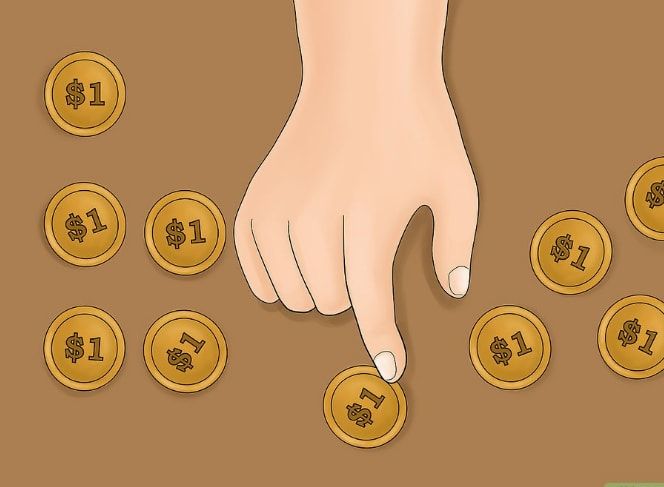
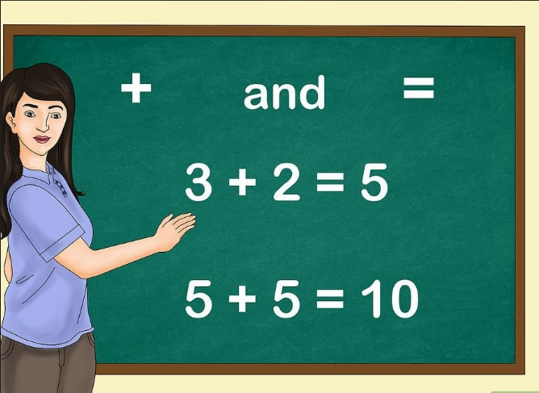

Comment enseigner le concept d’addition à un enfant
Aider un enfant à apprendre le concept d'addition contribuera à lui donner une très bonne base pour son avenir académique. Idéalement, les élèves de CP doivent déjà comprendre les notions d'addition et parfois de soustraction des nombres jusqu'à 20. Cependant, avant de pouvoir réussir ce genre d'opération, vous devez lui enseigner les notions de base. Il existe plusieurs outils pédagogiques qui peuvent vous aider à donner efficacement vos cours, tout en agrémentant l'apprentissage du concept d'addition.
Utiliser du matériel de manipulation
1 Utilisez des objets. Les enfants apprennent plus facilement avec l'utilisation d'outils visuels qui aident à comprendre les règles de l'addition. Vous pouvez utiliser un objet facile à manipuler, comme des perles ou des cubes, des Cheerios. Commencez avec quelques objets et utilisez différentes techniques pour lui montrer les relations entre les nombres. Donnez à l'enfant deux petits groupes d'objets : un groupe de deux cubes et un autre de trois cubes. Demandez-lui de compter le nombre de cubes dans chaque groupe. Ensuite, demandez-lui de rassembler les deux groupes et de compter le nombre total de cubes. Dites-lui qu'il vient en fait d'« ajouter» ces deux groupes . Donnez à l'enfant une certaine quantité d'objets (par exemple, six céréales) et demandez-lui le nombre de fois qu'il peut créer des groupes de céréales dont la somme est de six. Par exemple, il pourrait créer un ensemble de cinq céréales et un autre composé d'une seule unité . Empilez des objets pour lui montrer la notion de sommation. Par exemple, commencez avec une pile de trois pièces de monnaie, puis ajoutez-y deux autres pièces. Ensuite, demandez-lui de compter le nombre de pièces que forme maintenant la pile .
2 Rassemblez les élèves. Dans une salle de classe, tirez profit de la nécessité constante des élèves à se déplacer en vous servant d'eux comme un matériel d'enseignement. Envisagez d'utiliser des techniques similaires à celles qui ont été présentées plus haut pour regrouper les élèves, puis demandez-leur de se compter eux-mêmes dans différentes configurations . Bien entendu, vous ne devez en aucun cas empiler les élèves !
3 Demandez-leur de créer leurs propres matériels éducatifs. Invitez-les à utiliser de la pâte à modeler pour créer des objets manipulables ou à mettre en pratique la notion de sommation pendant un cours artistique en utilisant des ciseaux pour créer une série de formes de papier .
4 Jouez à des jeux. Utilisez des pièces d'un jeu sous de nouvelles formes pour créer des exercices ludiques. Les dés peuvent s'avérer très utiles pour lancer un jeu sur le thème de l'addition. Demandez aux élèves de rouler deux dés et de mettre en pratique le concept d'addition avec les chiffres qui apparaissent. Vous pouvez également utiliser des cartes ou des dominos . Lorsque vous travaillez avec des groupes d'élèves ayant différents niveaux d'apprentissage, vous pouvez adapter votre jeu et ainsi augmenter le niveau de difficulté pour les bons élèves. Par exemple, demandez-leur de faire l'addition des résultats de trois ou plusieurs dés (ou des cartes).
5 Comptez des pièces de monnaie. Utilisez des pièces de monnaie pour apprendre aux enfants à faire l'addition des valeurs telles que 5, 10 et 25. En plus d'enseigner les règles d'addition, cette méthode aide à acquérir des compétences financières, tout en démontrant les avantages pratiques de l'apprentissage sur la notion de sommation .
Commencer à utiliser le langage mathématique et les relations numériques
1 Familiarisez-les avec les symboles d'addition. Apprenez-les la signification des symboles « + » et « = ». Aidez-les ensuite à écrire de simples « expressions numériques » comme « 3 + 2 = 5 ». Présentez d'abord les opérations numériques sous la forme horizontale. Les enfants apprennent déjà à l'école qu'ils doivent écrire les mots et les phrases horizontalement. Adoptez ce même principe avec les opérations numériques pour ne pas les embrouiller. Une fois qu'ils auront maitrisé le concept, présentez vos opérations verticalement .
Utilisez des termes relatifs au concept d'addition. Introduisez peu à peu dans vos cours certaines expressions qui peuvent être utilisés pour indiquer la somme de deux ou de plusieurs nombres, comme « rassembler », « regrouper », « combien au total », « le tout », « ajouter »
Expliquez la relation entre les chiffres. Certains exemples montrent comment les chiffres dans un exercice d'addition sont reliés les uns aux autres. En outre, vous expliquez la relation entre le concept d'addition et de soustraction. Par exemple, les nombres entiers 4, 5 et 9 sont un bon exemple, car 4 + 5 = 9, 5 + 4 = 9, 9 - 4 = 5 et 9 - 5 = 4 [13]. Utilisez des boites de lait pour illustrer cette notion. Enveloppez-les avec du papier et demandez aux élèves d'écrire les nombres entiers naturels pouvant former des opérations similaires, comme 4, 5 et 9. Demandez-leur ensuite d'écrire ces opérations sur chaque côté de la boite, comme « 4 + 5 = 9 »
Mémoriser les éléments essentiels
1 Apprenez-leur à compter par intervalle de nombre. Apprendre à compter de 2 en 2, de 5 en 5 ou de 10 en 10 aidera les élèves à comprendre les relations entre les nombres, en plus de leur servir de points de référence

2 Encouragez-les à mémoriser les « doubles ». Ce sont des notions mathématiques comme « 3 + 3 = 6 » ou « 8 + 8 = 16 ». Même dans ce cas, ces opérations servent de points de référence pour les élèves dans leur processus d'apprentissage de l'addition. Par exemple, un enfant qui sait que « 8 + 8 = 16 » peut facilement trouver la somme de « 8 + 9 » en ajoutant 1 au total
3 Stimulez leur mémoire avec des fiches pédagogiques. Essayez de regrouper en différentes catégories ces fiches pour mettre l'accent sur les relations entre les chiffres. Même s'ils devaient instinctivement reconnaitre la façon dont les chiffres interagissent les uns avec les autres, mémoriser des notions élémentaires d'arithmétiques servira de base complémentaire avant de leur apprendre les équations arithmétiques plus complexes
Utiliser des problèmes de mathématiques
1 Utilisez différents types de problèmes mathématiques. Certains élèves peuvent trouver ces exercices plus difficiles, tandis que d'autres peuvent obtenir de meilleurs résultats une fois qu'ils auront compris l'usage même du concept de l'addition dans la vie. Aidez-les à reconnaitre trois situations différentes qui nécessitent l'usage de la notion de l'addition. Les problèmes dont l'issue est inconnue. Exemple : si Marc a deux voitures et que pour son anniversaire il en reçoit trois autres, combien de voitures a-t-il en tout ? Les problèmes avec une donnée inconnue. Exemple : si Marc a deux voitures et qu'après avoir déballé tous ses cadeaux, il se retrouve maintenant avec cinq voitures, combien de voitures a-t-il reçues pour son anniversaire ? Les problèmes où la situation initiale est inconnue. Exemple : si Marc reçoit pour son anniversaire trois voitures et en possède maintenant cinq en tout, combien de voitures avait-il au début ?
2 Apprenez-leur à reconnaitre différents types de problèmes. Les situations réelles impliquent différents paramètres. Comprendre la façon dont ces paramètres fonctionnent aidera l'enfant à développer des outils nécessaires pour résoudre des problèmes d'addition. Les problèmes d'association qui impliquent une quantité croissante. Exemple : si Elizabeth prépare trois gâteaux et que Sarah en fait six, combien de gâteaux a-t-on en tout ? Vous pouvez également demander aux élèves de rechercher les valeurs inconnues ou initiales. Voici un exemple : Elizabeth a fait trois gâteaux et avec Sarah elles en ont fait toutes deux neuf. Combien de gâteaux Sarah avait-elle préparés ? Les problèmes de sommation de deux données qui appartiennent à un même groupe. Par exemple, s'il y a dans une classe 12 filles et 10 garçons, combien d'élèves y a-t-il au total ? Les problèmes de comparaison comportant une valeur inconnue par rapport à un ensemble de valeurs. Par exemple, si John a sept gâteaux et a trois de plus que Laura, combien de gâteaux a Laura ?
3 Utilisez des livres. Les enfants qui savent déjà lire et écrire peuvent en apprendre davantage avec des livres qui traitent de ce sujet. Faites des recherches sur Internet en tapant des mots-clés comme « livres pour apprendre les mathématiques pour classes élémentaires » pour trouver des options appropriées pour votre classe